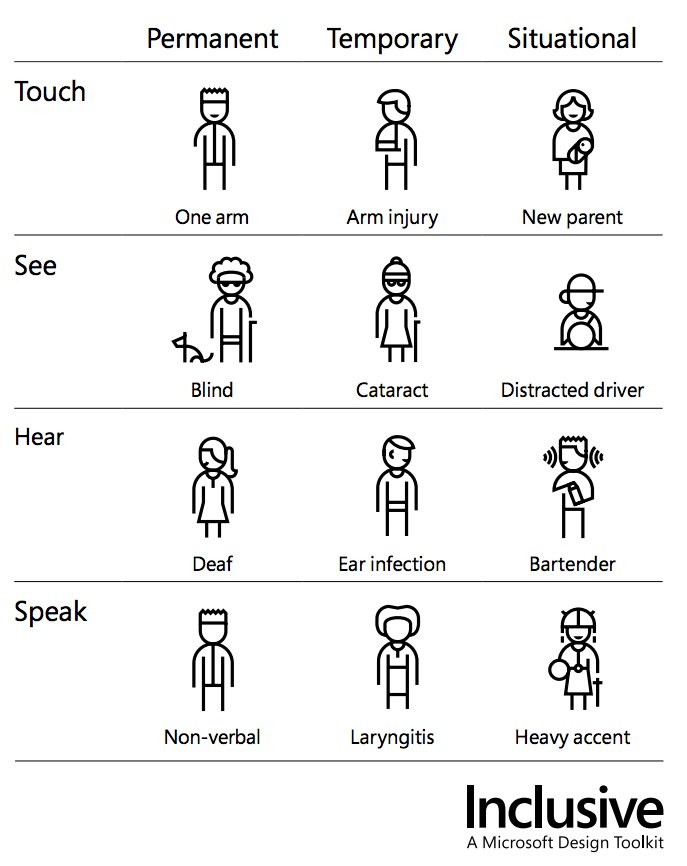
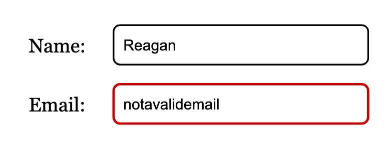
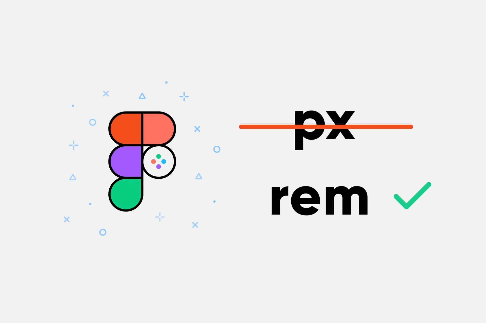
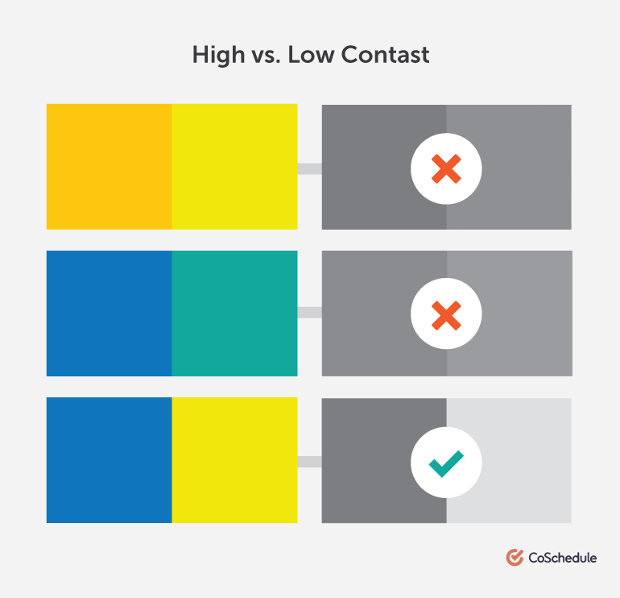

Accessibility
in frontend
Agenda
What is accessibility
-
3 main steps to make you code accessible
Decisions for your project
Used and useful links
What is accessibility
3 basic steps to make your code accessible
step 1: Write semantic html

Use landmarks:
Use semantic tags
- role:
- The element’s type
- name:
- The element’s computed label
- value (optional):
- Any input values
- status (optional):
- The element’s current status
Organize headings properly
Please, do not use heading for styling!
Create appropriate table markup
"scope" attribute
-
Label and name your elements
-
-
- Form elements have associated labels.
- Button and links have discernible names
step 2: Use clear CSS and styling
Be careful with colors
Prefer rem rather then px
Provide sufficient color contrast
step 3: Use clear and clean content
Keep multimedia accessible
- Create custom audio and video controls
- Provide Audio transcripts
- Provide Video text tracks
Use clear language

Provide deciphering for abbreviations
- Instead of writing 5–7, write 5 to 7
- Instead of writing Jan, write January
-
Some more decisions for your project:
- Create skip links
- Use empty alt property
- Control focus with tabindex
- Properly manage visibility of off-screen elements